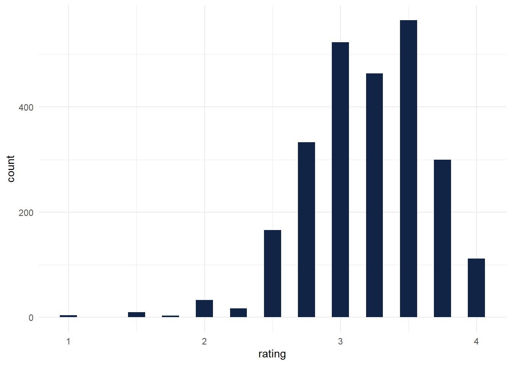

install.packages("tidyverse")
install.packages("here")
install.packages("tidytuesdayR")
install.packages("janitor")
install.packages("esquisse")
install.packages("skimr")
install.packages("tab")
install.packages('knitr', dependencies = TRUE)project1
echo = FALSE
library(here)Warning: package 'here' was built under R version 4.3.1here() starts at C:/Users/wgarnea1/Documents/project1library(tidyverse)Warning: package 'tidyverse' was built under R version 4.3.1Warning: package 'ggplot2' was built under R version 4.3.1Warning: package 'tibble' was built under R version 4.3.1Warning: package 'tidyr' was built under R version 4.3.1Warning: package 'readr' was built under R version 4.3.1Warning: package 'purrr' was built under R version 4.3.1Warning: package 'dplyr' was built under R version 4.3.1Warning: package 'stringr' was built under R version 4.3.1Warning: package 'forcats' was built under R version 4.3.1Warning: package 'lubridate' was built under R version 4.3.1── Attaching core tidyverse packages ──────────────────────── tidyverse 2.0.0 ──
✔ dplyr 1.1.3 ✔ readr 2.1.4
✔ forcats 1.0.0 ✔ stringr 1.5.0
✔ ggplot2 3.4.3 ✔ tibble 3.2.1
✔ lubridate 1.9.2 ✔ tidyr 1.3.0
✔ purrr 1.0.1 ── Conflicts ────────────────────────────────────────── tidyverse_conflicts() ──
✖ dplyr::filter() masks stats::filter()
✖ dplyr::lag() masks stats::lag()
ℹ Use the conflicted package (<http://conflicted.r-lib.org/>) to force all conflicts to become errorslibrary(tidytuesdayR)Warning: package 'tidytuesdayR' was built under R version 4.3.1library(readr)
library(esquisse)Warning: package 'esquisse' was built under R version 4.3.1library(skimr)Warning: package 'skimr' was built under R version 4.3.1library(janitor)Warning: package 'janitor' was built under R version 4.3.1
Attaching package: 'janitor'
The following objects are masked from 'package:stats':
chisq.test, fisher.testlibrary(tab)Warning: package 'tab' was built under R version 4.3.1Loading required package: knitrlibrary(knitr)#Default code – not using because it will max out API
tuesdata <- tidytuesdayR::tt_load("2022-01-18") --- Compiling #TidyTuesday Information for 2022-01-18 ------- There is 1 file available ------ Starting Download ---
Downloading file 1 of 1: `chocolate.csv`--- Download complete ---chocolate<- tuesdata$chocolateif (!dir.exists(here("data"))) {
dir.create(here("data"))
}# saves data only once (not each time you knit a R Markdown)
if (!file.exists(here("data", "chocolate.RDS"))) {
url_csv <- "https://raw.githubusercontent.com/rfordatascience/tidytuesday/master/data/2022/2022-01-18/chocolate.csv"
chocolate <- readr::read_csv(url_csv)
# save the file to RDS objects
saveRDS(chocolate, file = here("data", "chocolate.RDS"))
}chocolate <- readRDS(here("data", "chocolate.RDS"))
as_tibble(chocolate)# A tibble: 2,530 × 10
ref company_manufacturer company_location review_date
<dbl> <chr> <chr> <dbl>
1 2454 5150 U.S.A. 2019
2 2458 5150 U.S.A. 2019
3 2454 5150 U.S.A. 2019
4 2542 5150 U.S.A. 2021
5 2546 5150 U.S.A. 2021
6 2546 5150 U.S.A. 2021
7 2542 5150 U.S.A. 2021
8 797 A. Morin France 2012
9 797 A. Morin France 2012
10 1011 A. Morin France 2013
# ℹ 2,520 more rows
# ℹ 6 more variables: country_of_bean_origin <chr>,
# specific_bean_origin_or_bar_name <chr>, cocoa_percent <chr>,
# ingredients <chr>, most_memorable_characteristics <chr>, rating <dbl>glimpse(chocolate)Rows: 2,530
Columns: 10
$ ref <dbl> 2454, 2458, 2454, 2542, 2546, 2546, 2…
$ company_manufacturer <chr> "5150", "5150", "5150", "5150", "5150…
$ company_location <chr> "U.S.A.", "U.S.A.", "U.S.A.", "U.S.A.…
$ review_date <dbl> 2019, 2019, 2019, 2021, 2021, 2021, 2…
$ country_of_bean_origin <chr> "Tanzania", "Dominican Republic", "Ma…
$ specific_bean_origin_or_bar_name <chr> "Kokoa Kamili, batch 1", "Zorzal, bat…
$ cocoa_percent <chr> "76%", "76%", "76%", "68%", "72%", "8…
$ ingredients <chr> "3- B,S,C", "3- B,S,C", "3- B,S,C", "…
$ most_memorable_characteristics <chr> "rich cocoa, fatty, bready", "cocoa, …
$ rating <dbl> 3.25, 3.50, 3.75, 3.00, 3.00, 3.25, 3…dim(chocolate)[1] 2530 10str(chocolate)spc_tbl_ [2,530 × 10] (S3: spec_tbl_df/tbl_df/tbl/data.frame)
$ ref : num [1:2530] 2454 2458 2454 2542 2546 ...
$ company_manufacturer : chr [1:2530] "5150" "5150" "5150" "5150" ...
$ company_location : chr [1:2530] "U.S.A." "U.S.A." "U.S.A." "U.S.A." ...
$ review_date : num [1:2530] 2019 2019 2019 2021 2021 ...
$ country_of_bean_origin : chr [1:2530] "Tanzania" "Dominican Republic" "Madagascar" "Fiji" ...
$ specific_bean_origin_or_bar_name: chr [1:2530] "Kokoa Kamili, batch 1" "Zorzal, batch 1" "Bejofo Estate, batch 1" "Matasawalevu, batch 1" ...
$ cocoa_percent : chr [1:2530] "76%" "76%" "76%" "68%" ...
$ ingredients : chr [1:2530] "3- B,S,C" "3- B,S,C" "3- B,S,C" "3- B,S,C" ...
$ most_memorable_characteristics : chr [1:2530] "rich cocoa, fatty, bready" "cocoa, vegetal, savory" "cocoa, blackberry, full body" "chewy, off, rubbery" ...
$ rating : num [1:2530] 3.25 3.5 3.75 3 3 3.25 3.5 3.5 3.75 2.75 ...
- attr(*, "spec")=
.. cols(
.. ref = col_double(),
.. company_manufacturer = col_character(),
.. company_location = col_character(),
.. review_date = col_double(),
.. country_of_bean_origin = col_character(),
.. specific_bean_origin_or_bar_name = col_character(),
.. cocoa_percent = col_character(),
.. ingredients = col_character(),
.. most_memorable_characteristics = col_character(),
.. rating = col_double()
.. )
- attr(*, "problems")=<externalptr> #1 Make a histogram of the rating scores to visualize the overall distribution of scores. Change the number of bins from the default to 10, 15, 20, and 25. Pick on the one that you think looks the best. Explain what the difference is when you change the number of bins and explain why you picked the one you did.
esquisser(chocolate)ggplot(chocolate) +
aes(x = rating) +
geom_histogram(bins = 25L, fill = "#112446") +
theme_minimal()
#2 Consider the countries where the beans originated from. How many reviews come from each country of bean origin?
origin<-select(chocolate, country_of_bean_origin) chocolate.o <- group_by(origin,country_of_bean_origin)chocolate.o %>% group_by(country_of_bean_origin) %>% count()# A tibble: 62 × 2
# Groups: country_of_bean_origin [62]
country_of_bean_origin n
<chr> <int>
1 Australia 3
2 Belize 76
3 Blend 156
4 Bolivia 80
5 Brazil 78
6 Burma 1
7 Cameroon 3
8 China 1
9 Colombia 79
10 Congo 11
# ℹ 52 more rows#3 What is average rating scores from reviews of chocolate bars that have Ecuador as country_of_bean_origin in this dataset? For this same set of reviews, also calculate (1) the total number of reviews and (2) the standard deviation of the rating scores. Your answer should be a new data frame with these three summary statistics in three columns. Label the name of these columns mean, sd, and total.
rating<-select(chocolate, country_of_bean_origin,rating)rating.ecuador <- filter(rating, country_of_bean_origin == "Ecuador")count(rating.ecuador)# A tibble: 1 × 1
n
<int>
1 219mean(rating.ecuador$rating)[1] 3.164384sd(rating.ecuador$rating)[1] 0.5122678summary.ecuador<-tibble(
total = count(rating.ecuador),
mean = mean(rating.ecuador$rating),
sd = sd(rating.ecuador$rating)
)print(summary.ecuador)# A tibble: 1 × 3
total$n mean sd
<int> <dbl> <dbl>
1 219 3.16 0.512
#Which country makes the best chocolate (or has the highest ratings on average) with beans from Ecuador?
::: {.cell}
```{.r .cell-code}
company.reviews<-select(chocolate, company_location,country_of_bean_origin,rating):::
company.ecuador<-filter(company.reviews, country_of_bean_origin == "Ecuador")location<-group_by(company.ecuador, company_location)summary<-summarize(location,
mean = mean(rating, na.rm= TRUE),
location = company_location,
origin = country_of_bean_origin)Warning: Returning more (or less) than 1 row per `summarise()` group was deprecated in
dplyr 1.1.0.
ℹ Please use `reframe()` instead.
ℹ When switching from `summarise()` to `reframe()`, remember that `reframe()`
always returns an ungrouped data frame and adjust accordingly.`summarise()` has grouped output by 'company_location'. You can override using
the `.groups` argument.summary %>% arrange(desc(mean))# A tibble: 219 × 4
# Groups: company_location [25]
company_location mean location origin
<chr> <dbl> <chr> <chr>
1 Australia 3.81 Australia Ecuador
2 Australia 3.81 Australia Ecuador
3 Australia 3.81 Australia Ecuador
4 Australia 3.81 Australia Ecuador
5 Switzerland 3.75 Switzerland Ecuador
6 Switzerland 3.75 Switzerland Ecuador
7 New Zealand 3.62 New Zealand Ecuador
8 New Zealand 3.62 New Zealand Ecuador
9 Hungary 3.5 Hungary Ecuador
10 Hungary 3.5 Hungary Ecuador
# ℹ 209 more rows